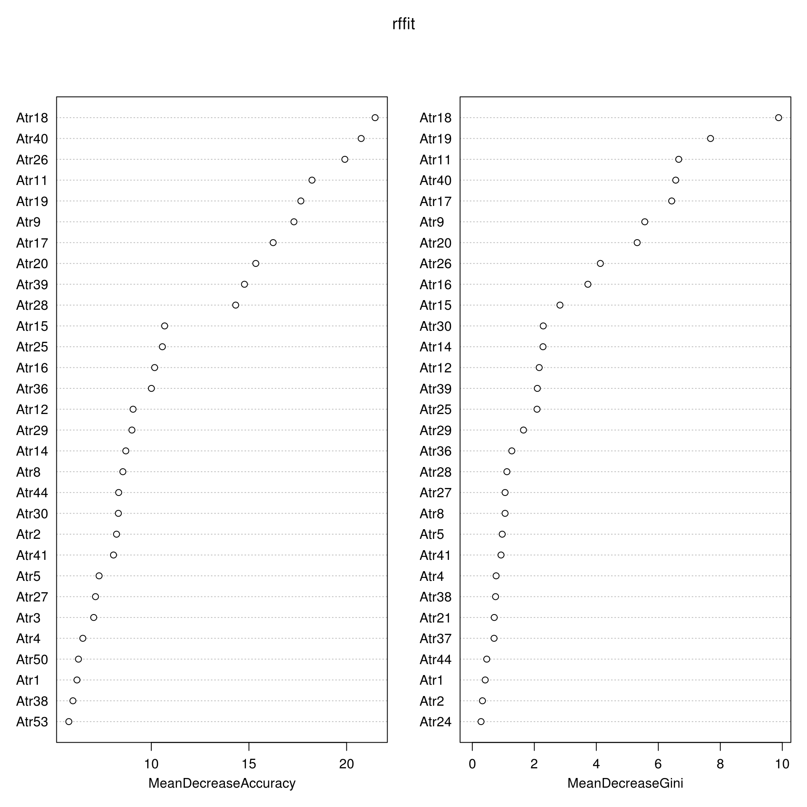

A study done in Turkey attempts to answer what are the important questions that will lead to a divorce. The dataset can be found in the UCI Machine Learning Repository. (“UCI Machine Learning Repository: Divorce Predictors Data Set Data Set” 2020) The paper itself can be found here. They used a questionnaire base on Gottman's approach to couples therapy. It consist of 54 different statements related to marriage such as "I enjoy our holidays with my wife." or "I'm not the one who's wrong about problems at home.". Participants are asked to rate their response as an integer from 0 to 5, presumably 0 for strongly agree and 5 for strongly disagree. They are also classified as either married or divorced, where 0 corresponds to married and 1 corresponds to divorce. Yöntem et al. (2019)
We will attempt attempt to verify the model accuracy as well as which predictors are significant to discerning whether someone is divorced or not. We will primarily look into the random forest model and use mean decrease inpurity as our metric of importance. Going further we will look at which predictors aren't important in discerning divorce vs. married.
The data was taken at the UCI machine learning repository here: https://archive.ics.uci.edu/ml/machine-learning-databases/00497/
During this time, June 02, 2020, using the R programming language. The machine learning repository needed further citation on the paper. From what it seems, it is indeed the correct paper and dataset as I was able to reproduce most of the code. The researchers conducted face to face interviews and google drive forms to administer the questionnaire. It has no missing values.
Exploratory Analysis was performed using contingency tables, faceted line graphs, and scatterplots of correlations of the data in tidy format. The data is evenly split between married and divorce, with 84 participants divorced and 86 married. Further statistic is provided in the paper, with 74 participants married for love and 96 were arrange marriage. Only the first claim could be verified.
Going further with the data, the mean response value for those that are married is 0.55 while those that are divorced is 3.05. Participant response is heavily weighted to 0, strongly agree.
A simple logistic regression with predictor Class and the rest as the response was done. Showing none as a significant predictor. This is using the glm model with a family of binomial distribution. We, then started to use training, test/validation sets. Using the caret package to build a random forest model with bootstrap resampling. Arnholt (2020)
All analysis used in this paper can be reproduced by using the original dataset with RStudio. The R packages use were randomForest(Cutler and Wiener 2018), caret (Kuhn 2020), Yardstick (Kuhn, Vaughan, and RStudio 2020), readxl (“Readxl Package | R Documentation” 2020), tidyverse (Wickham and RStudio 2019). These libraries must be loaded for the code to work.
The data partitioning percentage for the training is 60% and 40% validation/test set. The validation and testing set was partitioned evenly. This is our glm model using bootstrap resampling.
Generalized Linear Model
103 samples
54 predictor
2 classes: '0', '1'
No pre-processing
Resampling: Bootstrapped (25 reps)
Summary of sample sizes: 103, 103, 103, 103, 103, 103, ...
Resampling results:
Accuracy Kappa
0.7501027 0.4985343Confusion Matrix and Statistics
Reference
Prediction 0 1
0 15 2
1 2 15
Accuracy : 0.8824
95% CI : (0.7255, 0.967)
No Information Rate : 0.5
P-Value [Acc > NIR] : 3.082e-06
Kappa : 0.7647
Mcnemar's Test P-Value : 1
Sensitivity : 0.8824
Specificity : 0.8824
Pos Pred Value : 0.8824
Neg Pred Value : 0.8824
Prevalence : 0.5000
Detection Rate : 0.4412
Detection Prevalence : 0.5000
Balanced Accuracy : 0.8824
'Positive' Class : 0
Random Forest
103 samples
54 predictor
2 classes: '0', '1'
No pre-processing
Resampling: Bootstrapped (25 reps)
Summary of sample sizes: 103, 103, 103, 103, 103, 103, ...
Addtional sampling using up-sampling
Resampling results across tuning parameters:
mtry Accuracy Kappa
2 0.9667393 0.9324827
28 0.9636570 0.9261996
54 0.9563806 0.9115297
Accuracy was used to select the optimal model using the largest value.
The final value used for the model was mtry = 2.We moved on to reproduce the paper's result on random forest accuracy. The paper had 6 predictor variables was the optimal model, we tuned our random forest model with mtry of 6 due to this, which has an accuracy of 0.97, similar value on Table 2. in the paper. This is however not the case for the mtry 54 for the random forest model, where we were able to only achieve an accuracy of 0.96 while the paper's model achieved 97.64, unsure on the discrepancies.
Confusion Matrix and Statistics
Reference
Prediction 0 1
0 17 0
1 0 17
Accuracy : 1
95% CI : (0.8972, 1)
No Information Rate : 0.5
P-Value [Acc > NIR] : 5.821e-11
Kappa : 1
Mcnemar's Test P-Value : NA
Sensitivity : 1.0
Specificity : 1.0
Pos Pred Value : 1.0
Neg Pred Value : 1.0
Prevalence : 0.5
Detection Rate : 0.5
Detection Prevalence : 0.5
Balanced Accuracy : 1.0
'Positive' Class : 0
My random forest model was able to have 100% accuracy rating against the testing set while the simple logistic model had an accuracy of 88.235%. However there is clear overfitting here.
Random Forest
170 samples
54 predictor
2 classes: '0', '1'
No pre-processing
Resampling: Cross-Validated (5 fold)
Summary of sample sizes: 136, 136, 137, 135, 136
Resampling results:
Accuracy Kappa
0.9762923 0.9525512
Tuning parameter 'mtry' was held constant at a value of 6
Tuning
parameter 'splitrule' was held constant at a value of gini
Tuning
parameter 'min.node.size' was held constant at a value of 5Ranger result
Call:
ranger::ranger(dependent.variable.name = ".outcome", data = x, mtry = min(param$mtry, ncol(x)), min.node.size = param$min.node.size, splitrule = as.character(param$splitrule), write.forest = TRUE, probability = classProbs, ...)
Type: Classification
Number of trees: 500
Sample size: 170
Number of independent variables: 54
Mtry: 6
Target node size: 5
Variable importance mode: none
Splitrule: gini
OOB prediction error: 2.35 % We compare the simple glm model to the random forest model here on their accuracy onto the test set
We, then started to look at the mean decrease accuracy for the random forest model using the tuning parameter of gini. Using 2000 trees, we've narrowed down the most significant predictors as question 9, 11, 18, 19, 26, and 40. The paper however recorded 2, 6, 11, 18, 26, 40.
0 1 MeanDecreaseAccuracy MeanDecreaseGini
Atr1 6.013093 4.505396 6.195657 0.41616523
Atr2 8.552669 1.917795 8.220454 0.32659203
Atr3 7.151254 3.540141 7.051627 0.23923488
Atr4 6.443269 4.053108 6.495865 0.76783469
Atr5 6.872992 3.867602 7.327225 0.96456254
Atr6 3.948326 2.299726 4.327478 0.05818228
MeanDecreaseAccuracy MeanDecreaseGini
Atr1 6.195657 0.41616523
Atr2 8.220454 0.32659203
Atr3 7.051627 0.23923488
Atr4 6.495865 0.76783469
Atr5 7.327225 0.96456254
Atr6 4.327478 0.05818228Here are the questions for those interested.
These are the least significant from my model
The primary goal of this analysis was to reproduce portions of the paper, while there were similarities in the final models, there were still discrepancies I wasn't able to reproduce. This is likely due to a tuning parameter or the particular seed used. Of the 6 most significant predictors, we were able to identify 4. Question 11, 18 makes sense intuitively how why those issues are important. Question 26, 40 on the other hand are more suprising as they deal with uncertainty. The least significant predictors also can intuitively understood, for example question 23, a spouse's favorite food. It would be more perplexing if the model recognized it as significant. The data collecting methods of the researchers isn't particularly representative of marriage on the otherhand. This particular dataset picked participants ensuring that the marriage participants did not have thoughts of divorce, this could leave out unhappy marriages that do not divorce. Other metrics such as percent of divorce, percent of arrange marriage, etc. would put any predictive answers into question.
Arnholt, Alan T. 2020. Chapter 3 Stack Overflow Developer Survey | Supervised Learning in R: Case Studies. Accessed April 21. https://stat-ata-asu.github.io/SupervisedLearningCaseStudies/stack-overflow-developer-survey.html#training-models.
Cutler, Fortran original by Leo Breiman and Adele, and R. port by Andy Liaw and Matthew Wiener. 2018. randomForest: Breiman and Cutler’s Random Forests for Classification and Regression (version 4.6-14). https://CRAN.R-project.org/package=randomForest.
Kuhn, Max. 2020. The Caret Package. Accessed April 21. https://topepo.github.io/caret/index.html.
Kuhn, Max, Davis Vaughan, and RStudio. 2020. Yardstick: Tidy Characterizations of Model Performance (version 0.0.6). https://CRAN.R-project.org/package=yardstick.
“Readxl Package | R Documentation.” 2020. Accessed April 21. https://www.rdocumentation.org/packages/readxl/versions/0.1.1.
“UCI Machine Learning Repository: Divorce Predictors Data Set Data Set.” 2020. Accessed April 21. https://archive.ics.uci.edu/ml/datasets/Divorce+Predictors+data+set#.
Wickham, Hadley, and RStudio. 2019. Tidyverse: Easily Install and Load the ’Tidyverse’ (version 1.3.0). https://CRAN.R-project.org/package=tidyverse.
Yöntem, Mustafa Kemal, Kemal Adem, Tahsin İlhan, and Serhat Kiliçarslan. 2019. “DIVORCE PREDICTION USING CORRELATION BASED FEATURE SELECTION AND ARTIFICIAL NEURAL NETWORKS.” Nevşehir Hacı Bektaş Veli Üniversitesi SBE Dergisi 9 (1, 1): 259–73. http://dergipark.org.tr/en/pub/nevsosbilen/549416.